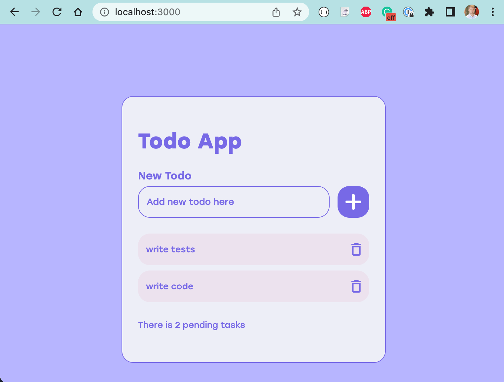
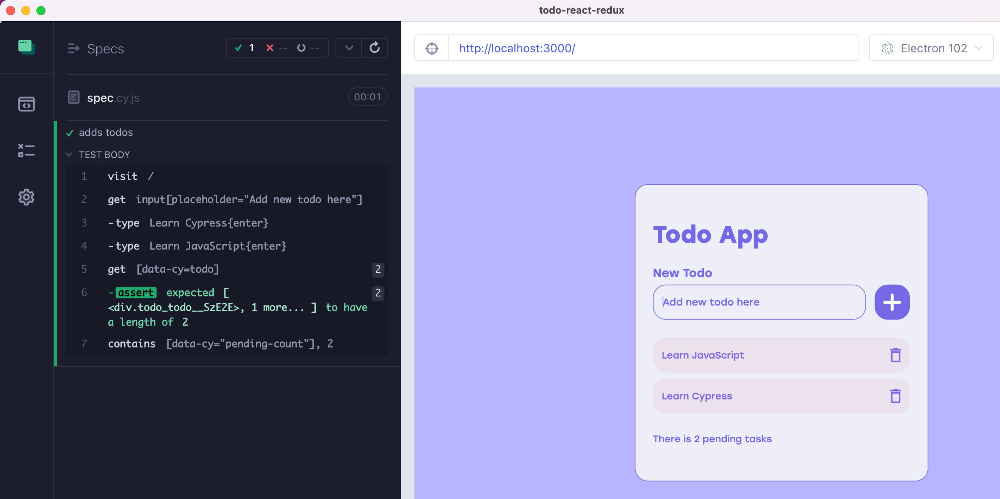
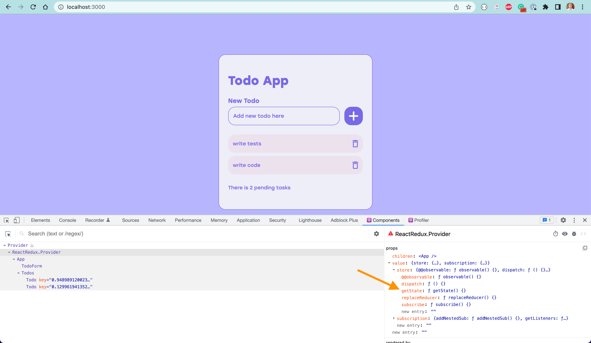
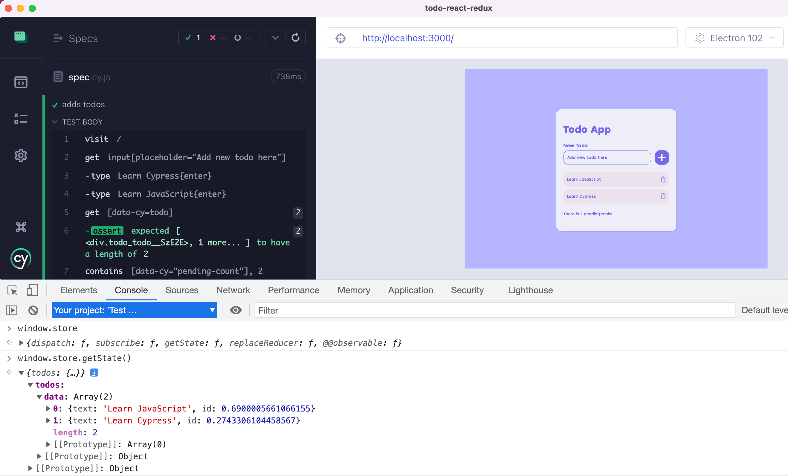
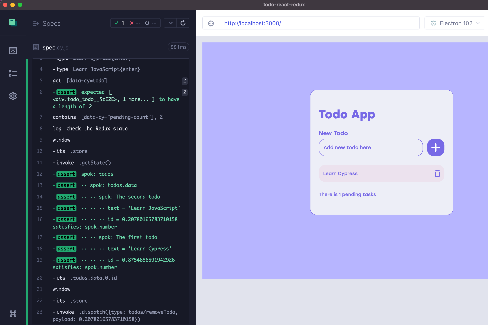

This blog post shows my two favorite things about Cypress tests:
- Validating complex objects and property types using cy-spok
- Driving the application by dispatching actions directly rather than always going through the UI
üéÅ You can find the source application used to write this blog post int the repo bahmutov/todo-react-redux. You can also find the concepts described in this blog post explained through hands-on exercises in my course Cypress Plugins.
The application and the first test
Our application is a TodoMVC where the user can add and delete todo items.

We can write an end-to-end test that adds the todos and checks the page to make sure the expected todos are displayed.
1 | it('adds todos', () => { |

The Redux store
Our application uses the Redux store to keep all its data.
1 | import { configureStore } from '@reduxjs/toolkit' |
1 | import ReactDOM from 'react-dom' |
What does the store keep inside? Is the data there correct and follows the expected rules as we manipulate the application through the user interface? If we have React DevTools browser extension, we can see the component and find the store, even if we cannot call getState() method to see the actual values (as far as I know)

How can we see what's inside that data store? By placing it on the window object during Cypress tests:
1 | export const store = configureStore({ ... }) |
Note: I make the TS types check pass using @ts-ignore comments. You could also extend the global application window type definition as described in Convert Cypress Specs from JavaScript to TypeScript to make the types work.
You should be able to open the DevTools in the Cypress browser, change the context to "Your project" and access the data directly using window.store.getState() method call.

Great, now let's check the data in the store.
Check the data using cy-spok
Once the test adds two todos, let's confirm the internal redux data. We will use cy.window, cy.its, and cy.invoke.
1 | it('adds todos', () => { |
Hmm, what should we write inside the should? We don't know the random IDs, so we cannot use deep.equal assertion. This is where the cy-spok shines. It lets us confirm complex data and/or types.
1 | import spok from 'cy-spok' |

The spok(...) functions the actual callback that will be called with the data:
1 | const callback = spok({ ... }) |
Now that we can access the Redux store to check what it contains, what else can we do?
Drive application by dispatching actions
Take a look at Todo component. It calls the removeTodo Redux action when the user clicks the Trash can button.
1 | import style from './todo.module.scss' |
Can we call the removeTodo action from the test bypassing the user interface. This is what I call App Actions and it is possible because the Cypress spec runs in the same window as the application. We will remove the first todo item using its ID.
1 | import spok from 'cy-spok' |
Once we get the store, we invoke the dispatch method and we even use Redux action removeTodo from the application source to help us construct the argument simpler.

Beautiful. All we need to do is to confirm the application has correctly updated its DOM.
1 | cy.window() |
Next, we can use cy-spok again to check the updated Redux store state:
1 | // get the Redux store again and confirm the data in it |
Very nice.